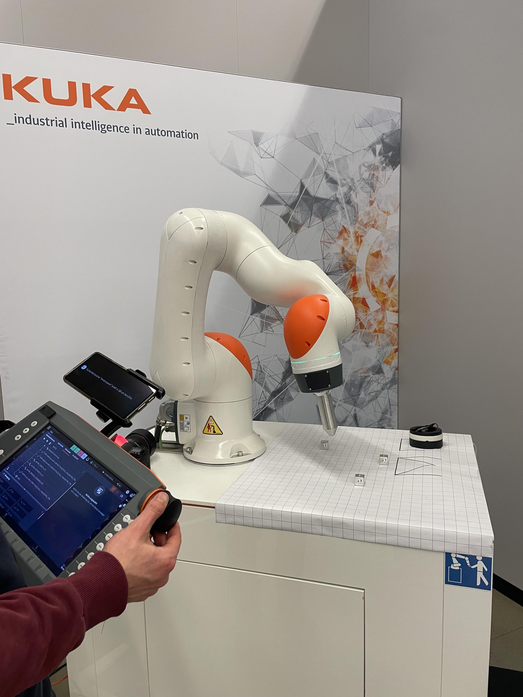
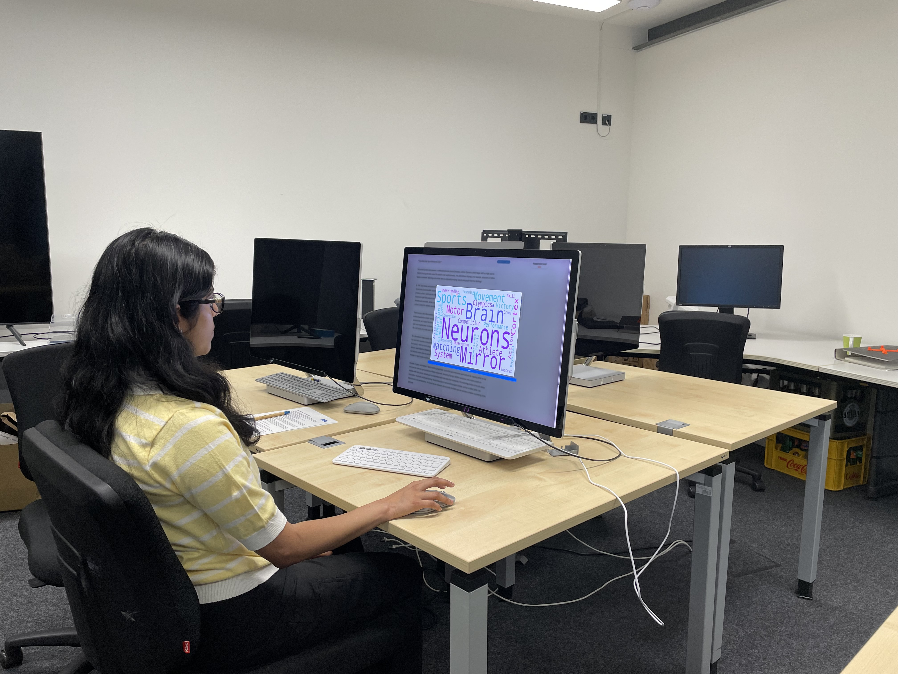
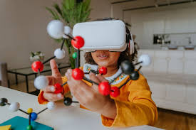
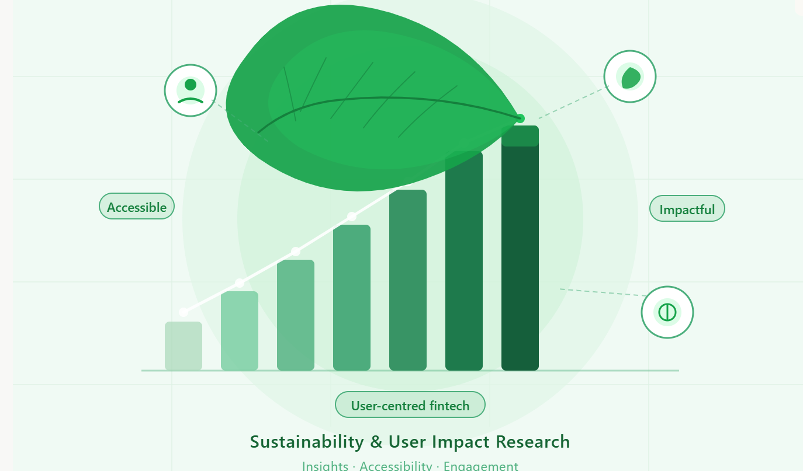
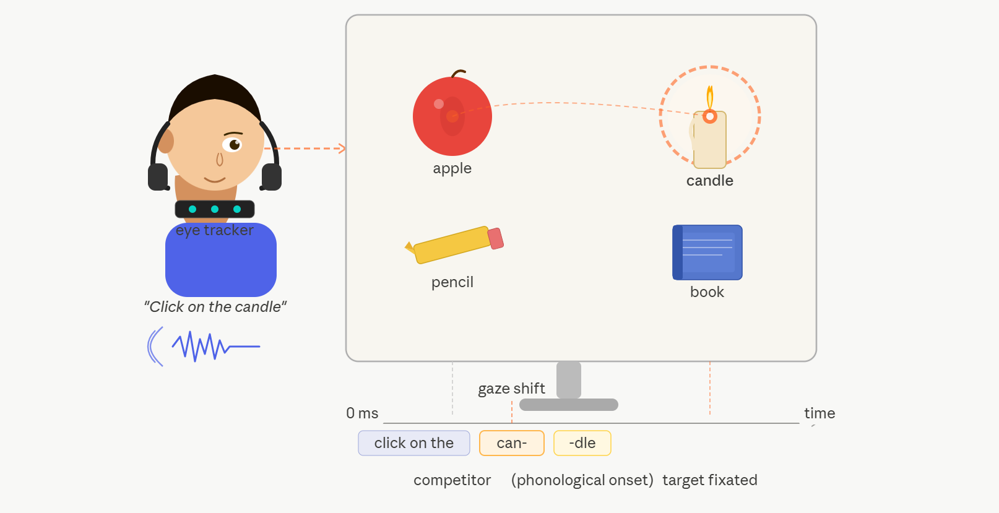
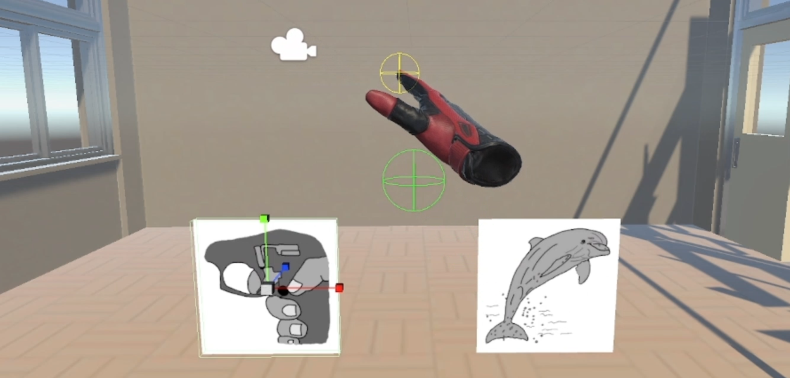
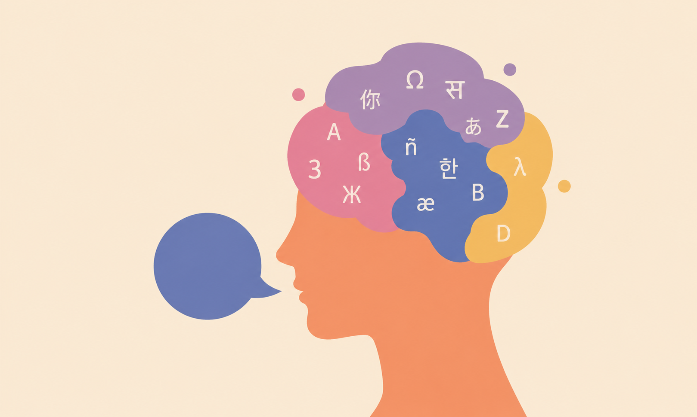

Usability Research
Multimodal Human-Robot Interaction
KUKA Deutschland GmbH
Improved cobot commissioning usability through multimodal feedback research
Read Case Study →I help you connect the dots
From eye-tracking studies and usability testing to VR experiments, I turn behavioral data into design decisions and research insights into actionable recommendations.
View My WorkUX researcher with a background in cognitive science and psychology. Experienced in HCI, human-robot interaction, and AI integration.
I use eye-tracking, usability testing, and behavioral experiments to find what's not working and why. I've done this at KUKA (robotics), DFKI (AI research), and the Max Planck Institute.
I'm driven by the unexpected finding. The one that reframes the problem and points to a better solution.
A look at the projects I've worked on and what I learned from them

KUKA Deutschland GmbH
Improved cobot commissioning usability through multimodal feedback research
Read Case Study →
RPTU Kaiserslautern / DFKI
Showed that adaptive support changes how users process learning content
Read Case Study →
Max Planck Institute for Psycholinguistics
Informed adaptive HCI frameworks using multimodal tracking data
Read Case Study →
ALSiSAR Impact
Drove product improvements through field research and user insights
Read Case Study →
RPTU Kaiserslautern
Identified gaze markers for real-time cognitive strain detection
Read Case Study →
RPTU Kaiserslautern
Demonstrated anticipatory motor behavior driven by language comprehension
Read Case Study →
RPTU Kaiserslautern
Revealed emotional valence amplifies cognitive cost of language switching
Read Case Study →What I use day to day
I use EyeLink systems to study where people look, how they read, and what catches their attention in an interface.
Running moderated and unmoderated sessions with SUS, UEQ, and behavioral data to see how well a product actually works for people.
Talking to people one-on-one to understand their motivations, mental models, and the needs they can't always articulate.
SPSS, R, MATLAB, Python. I run ANOVAs, mixed-effects models, and behavioral analytics to back up findings with numbers.
Figma, Miro, Unity, and MS Office for prototyping, mapping journeys, and making research findings easy to communicate.
Worked with AI-driven research and synthesis tools at DFKI to speed up insight generation and spot patterns faster.
My research process, and where I fit in the bigger picture
I plug into the product development cycle at multiple points, making sure decisions are grounded in real user behavior throughout the process.
Highlighted steps are where I come in. I'm involved in early discovery, defining the problem, mid-cycle testing, and post-launch evaluation.
Clarify the research question. What do we need to know and why does it matter for the product?
Choose the right methods, recruit participants, and design the study to get reliable answers.
Run the research. Interviews, usability tests, eye-tracking sessions, surveys, or experiments.
Synthesize the data. Find patterns, quantify behaviors, and pull out the insights that matter.
Translate findings into clear, actionable recommendations the team can act on immediately.
"Suramya quickly became a valued team member, bringing a great mix of curiosity, reliability, and positive energy. I especially appreciated her strong quantitative skills, which she applied with great precision, particularly in our multimodal study, where her contributions had a real impact. Her work was always of high quality, thoughtful, and well-structured, and she consistently brought fresh perspectives from her university background to the team."
"Thanks to her strong background in cognitive science, she approached complex data sets with an analytical mind and delivered precise, actionable insights. Suramya is highly reliable, proactive, and collaborates seamlessly with diverse teams. She will be a tremendous asset to any research or UX team."
Things I've been thinking about in UX research
Looking back at the cobot study with fresh eyes. Confidence checks, error rates, baselines, and other changes I'd make to sharpen the findings.
Read more →Most teams rely on what users say. But gaze data shows what they actually do. Here's why I think eye-tracking should be more accessible in product research.
Read more →My thesis taught me that adapting content isn't just about detecting difficulty. It's about timing, subtlety, and knowing when not to interrupt.
Read more →